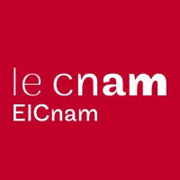
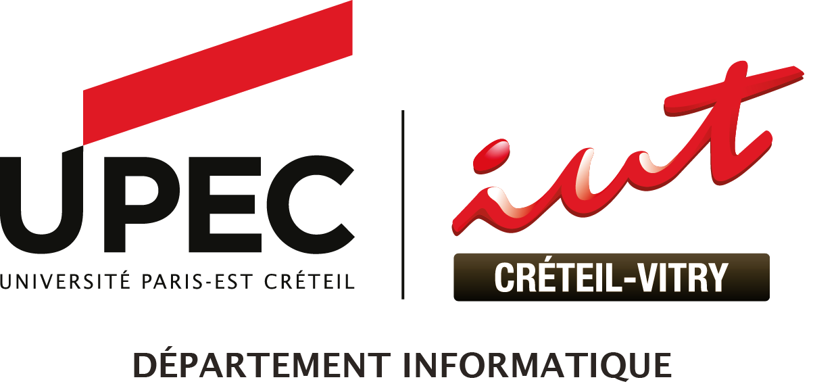
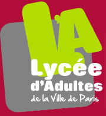

Diplôme d'ingénieur en systèmes d'information
2026 — 2029CNAM — Paris
Formation d'ingénieur spécialisée en systèmes d'information, en alternance.
Un parcours orienté informatique, data et systèmes d'information.

CNAM — Paris
Formation d'ingénieur spécialisée en systèmes d'information, en alternance.

IUT de Créteil-Vitry — Université Paris-Est Créteil
Parcours : Administration, gestion et exploitation des données.

BAC';this.parentElement.style.background='linear-gradient(135deg,#3a86f6,#eb53ff)';this.parentElement.style.borderColor='transparent';">Lycée d'adultes de la Ville de Paris — Paris 14